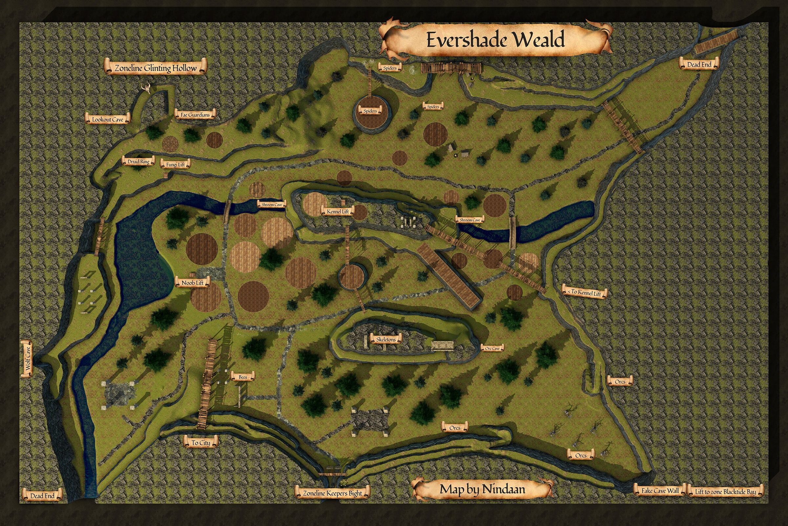
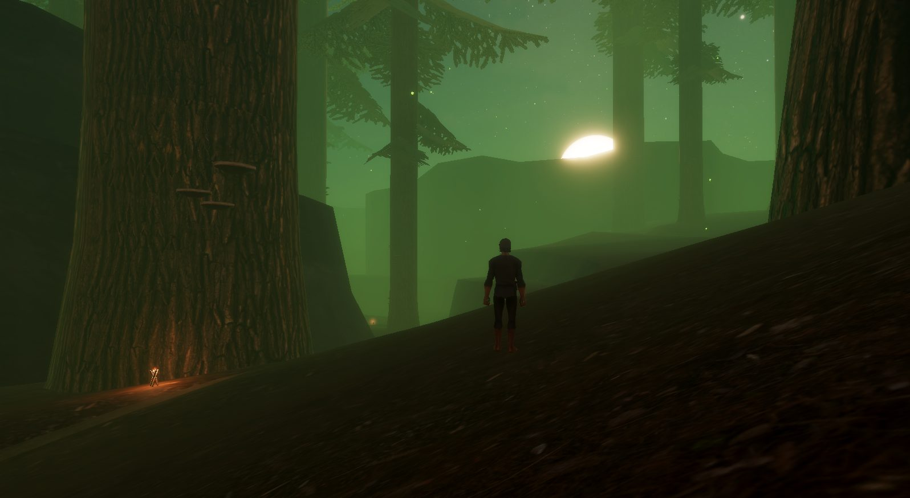

Evershade Weald
Evershade Weald is a starting zone restricted to the Wood Elf and the Halfling.
Patch 0.30.2.4 economy note: the devs' data showed Evershade Weald offers the most income of the four starts, slightly ahead of Night Harbor and Underdocks.
Map


Named mobs
Mobs & NPCs (camps by level)
Rows with a level are huntable camps; rows without are usually town NPCs or not yet documented.
| Name | Lvl | Race | Class | Where | Notes |
|---|---|---|---|---|---|
| A rotting skeleton | 1 | Skeleton | - | - | |
| a black bat | 1 | Bat | - | - | |
| a black wolf pup | 1 | Wolf | - | - | |
| a wasp drone | 1 | Wasp | - | - | |
| a black widow hatchling | 2-3 | Spider | - | - | |
| a dryad fawn | 2-3 | Dryad | Druid | - | |
| a large black bat | 2-3 | Bat | - | - | |
| a Fellstone Scout | 3-5 | Orc | - | - | Unintelligible Writings |
| a shrub bat | ~3-4 | Bat | - | - | |
| a black widow | 4-5 | Spider | - | - | |
| a green drakeling | 4-5 | Drake | - | - | |
| a rabid wolf | 4-5 | Wolf | - | - | |
| a skeleton | 4-5 | Skeleton | - | - | |
| a Fellstone Necromancer | 5-7 | Orc | Necromancer | - | Left Orc Ear |
| a Fellstone Warrior | 5-7 | Orc | Fighter | - | Left Orc Ear , Fellstone Warrior's Belt |
| a dawn pixie | 5 | Dryad | - | - | |
| a solstice pixie | 5 | Dryad | - | - | |
| a Fellstone Scout | 6 | Orc | - | - | Placeholder for Scout Leader Krindor |
| a summoner pixie | 6 | Dryad | - | - | |
| a Fellstone Shaman | 7-?? | Orc | Shaman | - | |
| a beguiled wolf | ~7-8? | Animal | - | - | Higher level version spawns in Fae cave, gets killed by Fae |
| a widow matron | 7-8 | Spider | - | - | |
| an elder widow | 7-8 | Spider | - | - | |
| a Fellstone Guard | 8-?? | Orc | Fighter | - | Left Orc Ear |
| a Fellstone Tracker | 8-10 | Orc | Ranger | - | Left Orc Ear , Fellstone Warrior's Belt , Unintelligible Report |
| a Fellstone Ragecaller | 9-?? | Orc | Shaman | - | |
| a Fossergrim Watcher | 9-11 | Wood Elf | - | - | |
| a Fellstone Defiler | 10-?? | Orc | Necromancer | - | |
| a Mezzatrain scion | 10-12 | Spider | - | - | |
| a Mezzatrian broodling | 10-12 | Spider | - | - | |
| a River Elemental | 11-12 | Elemental | - | Pond by newbie lift | |
| a beguiled bluecap | ~13-15 | Myconid | - | Sporehaven Karst | |
| a docile bluecap | ~13-15 | Myconid | - | Sporehaven Karst | |
| a docile redcap | ~13-15 | Myconid | - | Sporehaven Karst | |
| a rambunctious redcap | ~13-15 | Myconid | - | Sporehaven Karst | |
| a rambunctious redcap | ~13-15 | Myconid | - | Sporehaven Karst | |
| a rowdy redcap | ~13-15 | Myconid | - | Sporehaven Karst | |
| a spiteful sporeling | ~13-15 | Myconid | - | Sporehaven Karst | |
| a spoiled sporeling | ~13-15 | Myconid | - | Sporehaven Karst | |
| an animated sporeling | ~13-15 | Myconid | - | Sporehaven Karst | |
| a fae guardian | 36 | Drake | - | - | |
| a fae spellweaver | ~36 | Drake | - | - | |
| a fae wanderer | ~36 | Drake | - | - | |
| An Elven Field Sergeant | ??-?? | Skeleton | - | - | |
| Sporeweaver Underveil | - | Wood Elf | - | Sporehaven Karst | Quest giver |
| a Calafreyan soldier | ??-?? | Skeleton | - | - | |
| a fungal druid | - | Wood Elf | - | Sporehaven Karst |
Quests
| Quest | Reward | Giver | Min lvl |
|---|---|---|---|
| Beastmaster Starter Quest (Faelindral) | Novice Claws of the Keeper | Captain Relgen Greenblade , Aerin Mossfang | 1 |
| Bone Chips for Moon Dances | Random cloth armor | Moon Dances | 1 |
| Ranger Starter Quest (Faelindral) | Initiate Keepers Cloak, Reach of the Ardent Keeper | Captain Relgen Greenblade | 1 |
| Druid Starter Quest (Faelindral) | Aspirant Icon of the Gatekeeper | Sylvarya Starveil | 1 |
| Green Drakeling Scale Armor Quests | Green Drakeling Scale Boots, Green Drakeling Scale Cloak, Green Drakeling Scale Pants, Green Drakeling Scale Coat | Takalea Scaletender | 1 |
| Decipher the Unintelligible Writings | 25 copper (repeatable) | Researcher Fairgrove | 1 |
| Mushroom Menace | Staff of Spores | Sporeweaver Underveil | ? |
| Rogue Starter Quest (Faelindral) | Lambent Prospect Blade, Mask of the Forest Walker | Elyndiir Nightshade , Myrielle Softglade | 1 |
| Six Eyes Too Many | Pixie Glitter | Polietta Two-tone |
Gear that drops here
| Slot | Item | Key stats (wiki) | How to get | Lvl | Classes |
|---|---|---|---|---|---|
| Primary, Secondary | Alpha Wolf Fang | DMG 5 / DLY 23, STR +2, STA +1 | Quest: Rogue Starter Quest (Faelindral) (Elyndiir Nightshade, Faelindral, min lvl 1) Named drop: a beguiled alpha wolf (lvl 8-10) — Evershade Weald, (any wolf in) wolf cave | 1 | ARC BRD BST ELE ENC FTR INQ NEC RNG ROG SHD SHM SPB WIZ |
| Bat Wing | no stats listed on wiki | Quest: Druid Starter Quest (Faelindral) (Sylvarya Starveil, Faelindral, min lvl 1) Quest: Druid Starter Quest (Night Harbor) (Rolan Talmula, Night Harbor, min lvl 1) Quest: Ranger Starter Quest (Night Harbor) (-, Night Harbor, min lvl 1) Drop: a desert bat (lvl 1) — Night Harbor, Noob Yard | 1 | DRU ENC RNG SHM WIZ | |
| Bone Chips | no stats listed on wiki | Quest: Bone Chips for Moon Dances (Moon Dances, Faelindral, min lvl 1) Quest: Bone Chips for Squire Ryland (Squire Ryland, Night Harbor, min lvl 1) Quest: Druid Starter Quest (Faelindral) (Sylvarya Starveil, Faelindral, min lvl 1) Quest: Find Delilah's Pet (Delilah, Underdocks, min lvl 1) | 1 | NEC SHD | |
| Primary, Secondary | Cracked Staff | DMG 6 / DLY 33 | Drop: A rotting skeleton (lvl 1) — Night Harbor, Noob Yard Drop: a risen skeleton (lvl 13) — Night Harbor, Crypt (Night) Drop: an ashira lookout (lvl -) — Sungreet Strand, - Drop: an ashira warrior (lvl 6-7) — Sungreet Strand, - | 1 | All classes |
| Waist | Fellstone Warrior's Belt | AC 2 | Quest: Fighter Starter Quest (Faelindral) (Commander Elydris Stormbough, Faelindral, min lvl 1) Drop: a Fellstone Warrior (lvl 5-7) — Evershade Weald, - | 1 | ARC BRD BST CLR DRU FTR INQ MNK PAL RNG ROG SHD SHM SPB |
| Primary, Secondary | Rusty Axe | DMG 6 / DLY 42 | Drop: A skeletal warrior (lvl 4 - 11) — Tomb of the Last Wyrmsbane, - Drop: A skeletal cleric (lvl -) — Tomb of the Last Wyrmsbane, - Drop: A skeletal fighter (lvl 3 - 10) — Tomb of the Last Wyrmsbane, - Drop: a skeletal priest (lvl -) — Tomb of the Last Wyrmsbane, - | 1 | BST FTR INQ PAL RNG SHD SPB |
| Primary | Rusty Battle Axe | DMG 10 / DLY 54 | Drop: A rotting skeleton (lvl 1) — Night Harbor, Noob Yard Drop: an ashira warrior (lvl -) — Night Harbor, Noob Yard Drop: A skeletal warrior (lvl 4 - 11) — Tomb of the Last Wyrmsbane, - Drop: a skeletal deacon (lvl -) — Tomb of the Last Wyrmsbane, - | 1 | BST FTR INQ PAL SHD |
| Primary, Secondary | Rusty Dagger | DMG 4 / DLY 24 | Vendor: A scrap dealer — Evershade Weald; A used weapons dealer — Night Harbor, Shallow Shoals; Evershade Weald Drop: an ashira warrior (lvl 6-7) — Sungreet Strand, - Drop: a Bloodynose quarreler (lvl ~8-10) — Sungreet Strand, Tel Ekir Goblin Entrance Drop: a sullen farmhand (lvl unconfirmed) — Sungreet Strand | 1 | ARC BRD BST ELE ENC FTR INQ NEC RNG ROG SHD SHM SPB WIZ |
| Primary | Rusty Great Scythe | DMG 8 / DLY 46 | Drop: A rotting skeleton (lvl 1) — Night Harbor, Noob Yard Drop: a market peddler (lvl unconfirmed) — Night Harbor Drop: A skeletal warrior (lvl 4 - 11) — Tomb of the Last Wyrmsbane, - Drop: a skeletal monk (lvl -) — Tomb of the Last Wyrmsbane, - | 1 | BST DRU FTR INQ NEC RNG SHD SPB |
| Primary | Rusty Greatsword | DMG 9 / DLY 50 | Drop: a skeleton (lvl unconfirmed) — Shaded Dunes Drop: a stumbling zombie (lvl unconfirmed) — Shaded Dunes Drop: a bandit (lvl 10-13) — Shaded Dunes, - Drop: a smuggler (lvl unconfirmed) — Shaded Dunes | 1 | ARC BRD BST FTR INQ PAL RNG SHD SPB |
| Primary | Rusty Long Spear | DMG 9 / DLY 48 | Drop: an ashira warrior (lvl 6-7) — Sungreet Strand, - Drop: a Bloodynose quarreler (lvl ~8-10) — Sungreet Strand, Tel Ekir Goblin Entrance Drop: an ashira lookout (lvl -) — Sungreet Strand, - Drop: an ashira shaman (lvl -) — Sungreet Strand, - | 1 | ARC BRD BST FTR INQ RNG ROG SHD SHM |
| Primary, Secondary | Rusty Longsword | DMG 6 / DLY 38 | Drop: an ashira shaman (lvl -) — Sungreet Strand, - Drop: an ashira warrior (lvl 6-7) — Sungreet Strand, - Drop: a Bloodynose quarreler (lvl ~8-10) — Sungreet Strand, Tel Ekir Goblin Entrance Drop: an ashira lookout (lvl -) — Sungreet Strand, - | 1 | ARC BRD BST FTR INQ PAL RNG ROG SHD SPB WIZ |
| Primary, Secondary | Rusty Mace | DMG 6 / DLY 40 | Vendor: A scrap dealer — Evershade Weald; A used weapons dealer — Night Harbor, Shallow Shoals; Evershade Weald Drop: an ashira lookout (lvl -) — Sungreet Strand, - Drop: an ashira shaman (lvl -) — Sungreet Strand, - Drop: a Bloodynose quarreler (lvl ~8-10) — Sungreet Strand, Tel Ekir Goblin Entrance | 1 | BRD BST CLR DRU FTR INQ MNK PAL RNG ROG SHD SHM SPB |
| Primary | Rusty Maul | DMG 10 / DLY 52 | Drop: A skeletal cavalier (lvl 6 - 10) — Tomb of the Last Wyrmsbane, - Drop: A skeletal fighter (lvl 3 - 10) — Tomb of the Last Wyrmsbane, - Drop: a skeletal deacon (lvl -) — Tomb of the Last Wyrmsbane, - Drop: a skeletal warrior (lvl 4 - 11) — Tomb of the Last Wyrmsbane, - | 1 | BRD BST CLR DRU FTR INQ MNK PAL RNG ROG SHD SHM SPB |
| Primary, Secondary | Rusty Scimitar | DMG 5 / DLY 36 | Drop: A rotting skeleton (lvl 1) — Night Harbor, Noob Yard Drop: a goblin troublemaker (lvl 9) — Night Harbor, Docks Drop: a stumbling zombie (lvl unconfirmed) — Shaded Dunes Drop: a skeleton (lvl unconfirmed) — Shaded Dunes | 1 | ARC BRD BST DRU FTR INQ PAL RNG ROG SHD SPB WIZ |
| Primary, Secondary | Rusty Scythe | DMG 4 / DLY 28 | Drop: a skeleton (lvl unconfirmed) — Shaded Dunes Drop: a bandit (lvl 10-13) — Shaded Dunes, - Drop: an ashira warrior (lvl -) — Shaded Dunes, - Drop: a wererat (lvl unconfirmed) — Shaded Dunes | 1 | BST DRU FTR INQ NEC RNG SHD SPB |
| Primary, Secondary | Rusty Shortsword | DMG 4 / DLY 26 | Vendor: A scrap dealer — Evershade Weald; A used weapons dealer — Night Harbor, Shallow Shoals; Evershade Weald Drop: an ashira warrior (lvl 6-7) — Sungreet Strand, - Drop: an ashira lookout (lvl -) — Sungreet Strand, - Drop: a hired thug (lvl 9-10) — Sungreet Strand, Ameen Farm | 1 | ARC BRD BST FTR INQ PAL RNG ROG SHD SHM SPB WIZ |
| Primary, Secondary | Rusty Spear | DMG 5 / DLY 34 | Vendor: A scrap dealer — Evershade Weald; Evershade Weald; a scrap dealer Drop: an ashira warrior (lvl 6-7) — Sungreet Strand, - Drop: an ashira lookout (lvl -) — Sungreet Strand, - Drop: a rotting skeleton (lvl unconfirmed) — Sungreet Strand | 1 | ARC BRD BST FTR INQ RNG ROG SHD SHM |
| Secondary | Rusty Tower Shield | AC 4 | Drop: an ashira lookout (lvl -) — Sungreet Strand, - Drop: a Bloodynose quarreler (lvl ~8-10) — Sungreet Strand, Tel Ekir Goblin Entrance Drop: an ashira warrior (lvl 6-7) — Sungreet Strand, - Drop: a Bloodynose fumer (lvl ~8-10) — Sungreet Strand, Tel Ekir Goblin Entrance | 1 | FTR INQ PAL SHD |
| Primary, Secondary | Rusty Trident | DMG 5 / DLY 32 | Drop: an ashira lookout (lvl -) — Sungreet Strand, - Drop: an ashira warrior (lvl 6-7) — Sungreet Strand, - Drop: a Bloodynose quarreler (lvl ~8-10) — Sungreet Strand, Tel Ekir Goblin Entrance Drop: an ashira shaman (lvl -) — Sungreet Strand, - | 1 | ARC BRD BST FTR INQ RNG ROG SHD SHM |
| Primary | Rusty War Lance | DMG 9 / DLY 48 | Drop: an ashira warrior (lvl 6-7) — Sungreet Strand, - Drop: a hired thug (lvl 9-10) — Sungreet Strand, Ameen Farm Drop: a rotting skeleton (lvl unconfirmed) — Sungreet Strand Drop: an ashira lookout (lvl -) — Sungreet Strand, - | 1 | FTR INQ PAL SHD |
| Primary, Secondary | Rusty Warhammer | DMG 4 / DLY 30 | Drop: A skeletal fighter (lvl 3 - 10) — Tomb of the Last Wyrmsbane, - Drop: A skeletal marksman (lvl -) — Tomb of the Last Wyrmsbane, - Drop: a skeletal warrior (lvl 4 - 11) — Tomb of the Last Wyrmsbane, - Drop: a skeletal monk (lvl -) — Tomb of the Last Wyrmsbane, - | 1 | BRD BST CLR DRU FTR INQ MNK PAL RNG ROG SHD SHM SPB |
| Waist | Tattered Cloth Belt | AC 1 | Drop: A rotting skeleton (lvl 1) — Night Harbor, Noob Yard Drop: a cackling skeleton (lvl 15) — Night Harbor, Crypt (Night) Drop: a goblin troublemaker (lvl 9) — Night Harbor, Docks Drop: an ashira scout (lvl 2) — Night Harbor, Noob Yard | 1 | All classes |
| Feet | Tattered Cloth Boots | AC 1 | Drop: A rotting skeleton (lvl 1) — Night Harbor, Noob Yard Drop: an ashira scout (lvl 2) — Night Harbor, Noob Yard Drop: a goblin drunk (lvl -) — Night Harbor, Docks Drop: a goblin squatter (lvl 10) — Night Harbor, Docks | 1 | All classes |
| Wrist | Tattered Cloth Bracer | AC 1 | Drop: A skeletal fighter (lvl 3 - 10) — Tomb of the Last Wyrmsbane, - Drop: A skeletal warrior (lvl 4 - 11) — Tomb of the Last Wyrmsbane, - Drop: A skeletal cleric (lvl -) — Tomb of the Last Wyrmsbane, - Drop: A skeletal knight (lvl -) — Tomb of the Last Wyrmsbane, - | 1 | All classes |
| Head | Tattered Cloth Cap | AC 1 | Drop: A rotting skeleton (lvl 1) — Night Harbor, Noob Yard Drop: a goblin squatter (lvl 10) — Night Harbor, Docks Drop: a goblin troublemaker (lvl 9) — Night Harbor, Docks Drop: a goblin drunk (lvl -) — Night Harbor, Docks | 1 | All classes |
| Back | Tattered Cloth Cape | AC 1 | Drop: A rotting skeleton (lvl 1) — Night Harbor, Noob Yard Drop: a risen skeleton (lvl 13) — Night Harbor, Crypt (Night) Drop: a cackling skeleton (lvl 15) — Night Harbor, Crypt (Night) Drop: a goblin drunk (lvl -) — Night Harbor, Docks | 1 | All classes |
| Hands | Tattered Cloth Gloves | AC 1 | Drop: A rotting skeleton (lvl 1) — Night Harbor, Noob Yard Drop: a begrudging farmer (lvl unconfirmed) — Night Harbor Drop: a stumbling skeleton (lvl 14) — Night Harbor, Crypt (Night) Drop: a goblin drunk (lvl -) — Night Harbor, Docks | 1 | All classes |
| Neck | Tattered Cloth Gorget | AC 1 | Drop: A rotting skeleton (lvl 1) — Night Harbor, Noob Yard Drop: a goblin drunk (lvl -) — Night Harbor, Docks Drop: a goblin troublemaker (lvl 9) — Night Harbor, Docks Drop: a goblin squatter (lvl 10) — Night Harbor, Docks | 1 | All classes |
| Shoulders | Tattered Cloth Mantle | AC 1 | Drop: A skeletal fighter (lvl 3 - 10) — Tomb of the Last Wyrmsbane, - Drop: A skeletal monk (lvl -) — Tomb of the Last Wyrmsbane, - Drop: A skeletal warrior (lvl 4 - 11) — Tomb of the Last Wyrmsbane, - Drop: A skeletal defender (lvl -) — Tomb of the Last Wyrmsbane, - | 1 | All classes |
| Legs | Tattered Cloth Pantaloons | AC 1 | Drop: A skeletal fighter (lvl 3 - 10) — Tomb of the Last Wyrmsbane, - Drop: A skeletal warrior (lvl 4 - 11) — Tomb of the Last Wyrmsbane, - Drop: A skeletal defender (lvl -) — Tomb of the Last Wyrmsbane, - Drop: A skeletal cavalier (lvl 6 - 10) — Tomb of the Last Wyrmsbane, - | 1 | All classes |
| Chest | Tattered Cloth Robe | AC 2 | Drop: A rotting skeleton (lvl 1) — Night Harbor, Noob Yard Drop: a cackling skeleton (lvl 15) — Night Harbor, Crypt (Night) Drop: a goblin squatter (lvl 10) — Night Harbor, Docks Drop: a goblin gambler (lvl -) — Night Harbor, Docks | 1 | ELE ENC NEC WIZ |
| Shirt | Tattered Cloth Shirt | no stats listed on wiki | Drop: A rotting skeleton (lvl 1) — Night Harbor, Noob Yard Drop: a stumbling skeleton (lvl 14) — Night Harbor, Crypt (Night) Drop: a cackling skeleton (lvl 15) — Night Harbor, Crypt (Night) Drop: a goblin troublemaker (lvl 9) — Night Harbor, Docks | 1 | All classes |
| Chest | Tattered Cloth Tunic | AC 2 | Drop: A skeletal cleric (lvl -) — Tomb of the Last Wyrmsbane, - Drop: A skeletal fighter (lvl 3 - 10) — Tomb of the Last Wyrmsbane, - Drop: A skeletal warrior (lvl 4 - 11) — Tomb of the Last Wyrmsbane, - Drop: A skeletal priest (lvl -) — Tomb of the Last Wyrmsbane, - | 1 | All classes |
| Face | Tattered Cloth Veil | AC 1 | Drop: A rotting skeleton (lvl 1) — Night Harbor, Noob Yard Drop: a cackling skeleton (lvl 15) — Night Harbor, Crypt (Night) Drop: a goblin drunk (lvl -) — Night Harbor, Docks Drop: a goblin squatter (lvl 10) — Night Harbor, Docks | 1 | All classes |
| Primary, Secondary | Torch | Effect: Torch (Passive. Must Equip. Level: 1) | Quest: Pests at the Farm (Farmer Ammar, Night Harbor, min lvl 1) Vendor: A goods merchant — Night Harbor, Shallow Shoals; A greedy halfling — Night Harbor; A shifty elf — Evershade Weald Crafted: Survival (trivial X) Drop: A rotting skeleton (lvl 1) — Night Harbor, Noob Yard | 1 | All classes |
| Wasp Wing | no stats listed on wiki | Drop: a wasp drone (lvl 1) — Evershade Weald, - Drop: a wasp worker (lvl unconfirmed) — Evershade Weald Drop: a wasp drone (lvl -) — Keeper's Bight, - Drop: a wasp scout (lvl 9-10) — Keeper's Bight, - | 1 | DRU ENC RNG SHM WIZ | |
| Secondary | Worn Buckler | AC 2 | Drop: an ashira shaman (lvl -) — Sungreet Strand, - Drop: an ashira lookout (lvl -) — Sungreet Strand, - Drop: an ashira warrior (lvl 6-7) — Sungreet Strand, - Drop: a Bloodynose scarer (lvl ~8-10) — Sungreet Strand, Tel Ekir Goblin Entrance | 1 | BRD BST CLR DRU FTR INQ PAL RNG ROG SHD SHM SPB |
| Primary | Worn Great Staff | DMG 10 / DLY 39 | Drop: an ashira shaman (lvl -) — Sungreet Strand, - Drop: an ashira warrior (lvl 6-7) — Sungreet Strand, - Drop: a Bloodynose quarreler (lvl ~8-10) — Sungreet Strand, Tel Ekir Goblin Entrance Drop: a smarmy hunter (lvl unconfirmed) — Sungreet Strand | 1 | BST CLR DRU ELE ENC FTR MNK NEC PAL SHM SPB WIZ |
| Secondary | Nidus Buckler | AC 7, INT +2 | Named drop: Wasp Hive Protector (lvl 3-4) — Evershade Weald, - | 3 | FTR INQ PAL SHD |
| Secondary | Rusty Kite Shield | AC 3 | Drop: an ashira shaman (lvl -) — Sungreet Strand, - Drop: an ashira warrior (lvl 6-7) — Sungreet Strand, - Drop: a Bloodynose scarer (lvl ~8-10) — Sungreet Strand, Tel Ekir Goblin Entrance Drop: a filthy henchman (lvl unconfirmed) — Sungreet Strand | 3 | BRD CLR FTR INQ PAL RNG SHD |
| Waist | Tattered Rawhide Belt | AC 1 | Drop: A skeletal warrior (lvl 4 - 11) — Tomb of the Last Wyrmsbane, - Drop: A skeletal monk (lvl -) — Tomb of the Last Wyrmsbane, - Drop: a skeletal cleric (lvl -) — Tomb of the Last Wyrmsbane, - Drop: a risen zombie (lvl -) — Tomb of the Last Wyrmsbane, - | 3 | ARC BRD BST CLR DRU FTR INQ MNK PAL RNG ROG SHD SHM SPB |
| Back | Tattered Rawhide Cloak | AC 1 | Drop: A skeletal marksman (lvl -) — Tomb of the Last Wyrmsbane, - Drop: A skeletal warrior (lvl 4 - 11) — Tomb of the Last Wyrmsbane, - Drop: A skeletal cavalier (lvl 6 - 10) — Tomb of the Last Wyrmsbane, - Drop: A skeletal cleric (lvl -) — Tomb of the Last Wyrmsbane, - | 3 | ARC BRD BST CLR DRU FTR INQ MNK PAL RNG ROG SHD SHM SPB |
| Hands | Ironbind Gauntlets | AC 4, STA +1, WIS +1 | Named drop: Scout Grimgaze (lvl 4-5) — Evershade Weald, Orc Scout camp | 4 | ARC BRD BST CLR DRU FTR INQ MNK PAL RNG ROG SHD SHM SPB |
| Finger | Ring of the Pauper | AC 1, HP +5 | Drop: a black widow (lvl 4-5) — Evershade Weald, - Drop: a gloom widow (lvl 9-11) — Blacktide Bay, - Drop: a cobweaver hatchling (lvl -) — Night Harbor, Abandoned Boatwright's House Drop: a cobweaver spider (lvl unconfirmed) — Night Harbor | 4 | All classes |
| Chest | Tanned Redstalker Hide | AC 5, STR +2 | Named drop: Scout Grimgaze (lvl 4-5) — Evershade Weald, Orc Scout camp | 4 | ARC BRD BST CLR DRU FTR INQ MNK PAL ROG SHD SHM SPB |
| Feet | Tattered Rawhide Boots | AC 2 | Drop: A skeletal warrior (lvl 4 - 11) — Tomb of the Last Wyrmsbane, - Drop: A skeletal cleric (lvl -) — Tomb of the Last Wyrmsbane, - Drop: A skeletal archer (lvl -) — Tomb of the Last Wyrmsbane, - Drop: A skeletal cavalier (lvl 6 - 10) — Tomb of the Last Wyrmsbane, - | 4 | ARC BRD BST CLR DRU FTR INQ MNK PAL RNG ROG SHD SHM SPB |
| Wrist | Tattered Rawhide Bracer | AC 2 | Drop: A skeletal warrior (lvl 4 - 11) — Tomb of the Last Wyrmsbane, - Drop: A skeletal defender (lvl -) — Tomb of the Last Wyrmsbane, - Drop: A skeletal marksman (lvl -) — Tomb of the Last Wyrmsbane, - Drop: a skeletal priest (lvl -) — Tomb of the Last Wyrmsbane, - | 4 | ARC BRD BST CLR DRU FTR INQ MNK PAL RNG ROG SHD SHM SPB |
| Head | Tattered Rawhide Cap | AC 2 | Drop: A skeletal warrior (lvl 4 - 11) — Tomb of the Last Wyrmsbane, - Drop: A skeletal marksman (lvl -) — Tomb of the Last Wyrmsbane, - Drop: a skeletal knight (lvl -) — Tomb of the Last Wyrmsbane, - Drop: a risen zombie (lvl -) — Tomb of the Last Wyrmsbane, - | 4 | ARC BRD BST CLR DRU FTR INQ MNK PAL RNG ROG SHD SHM SPB |
| Hands | Tattered Rawhide Gloves | AC 2 | Drop: A skeletal warrior (lvl 4 - 11) — Tomb of the Last Wyrmsbane, - Drop: A skeletal priest (lvl -) — Tomb of the Last Wyrmsbane, - Drop: A skeletal marksman (lvl -) — Tomb of the Last Wyrmsbane, - Drop: a skeletal monk (lvl -) — Tomb of the Last Wyrmsbane, - | 4 | ARC BRD BST CLR DRU FTR INQ MNK PAL RNG ROG SHD SHM SPB |
| Neck | Tattered Rawhide Gorget | AC 1 | Drop: a skeleton (lvl unconfirmed) — Sungreet Strand Drop: an ashira warrior (lvl 6-7) — Sungreet Strand, - Drop: a Bloodynose quarreler (lvl ~8-10) — Sungreet Strand, Tel Ekir Goblin Entrance Drop: a hired thug (lvl 9-10) — Sungreet Strand, Ameen Farm | 4 | ARC BRD BST CLR DRU FTR INQ MNK PAL RNG ROG SHD SHM SPB |
| Legs | Tattered Rawhide Leggings | AC 2 | Drop: A skeletal warrior (lvl 4 - 11) — Tomb of the Last Wyrmsbane, - Drop: A skeletal monk (lvl -) — Tomb of the Last Wyrmsbane, - Drop: A skeletal defender (lvl -) — Tomb of the Last Wyrmsbane, - Drop: A skeletal priest (lvl -) — Tomb of the Last Wyrmsbane, - | 4 | ARC BRD BST CLR DRU FTR INQ MNK PAL RNG ROG SHD SHM SPB |
| Face | Tattered Rawhide Mask | AC 1 | Drop: A skeletal marksman (lvl -) — Tomb of the Last Wyrmsbane, - Drop: A skeletal warrior (lvl 4 - 11) — Tomb of the Last Wyrmsbane, - Drop: A skeletal cavalier (lvl 6 - 10) — Tomb of the Last Wyrmsbane, - Drop: a skeletal monk (lvl -) — Tomb of the Last Wyrmsbane, - | 4 | ARC BRD BST CLR DRU FTR INQ MNK PAL RNG ROG SHD SHM SPB |
| Shoulders | Tattered Rawhide Shoulderpads | AC 2 | Drop: A skeletal warrior (lvl 4 - 11) — Tomb of the Last Wyrmsbane, - Drop: A risen zombie (lvl -) — Tomb of the Last Wyrmsbane, - Drop: A skeletal marksman (lvl -) — Tomb of the Last Wyrmsbane, - Drop: A skeletal priest (lvl -) — Tomb of the Last Wyrmsbane, - | 4 | ARC BRD BST CLR DRU FTR INQ MNK PAL RNG ROG SHD SHM SPB |
| Chest | Tattered Rawhide Tunic | AC 3 | Drop: A skeletal marksman (lvl -) — Tomb of the Last Wyrmsbane, - Drop: A skeletal warrior (lvl 4 - 11) — Tomb of the Last Wyrmsbane, - Drop: a skeletal vicar (lvl -) — Tomb of the Last Wyrmsbane, - Drop: a risen zombie (lvl -) — Tomb of the Last Wyrmsbane, - | 4 | ARC BRD BST CLR DRU FTR INQ MNK PAL RNG ROG SHD SHM SPB |
| Shirt | Tattered Rawhide Vest | no stats listed on wiki | Drop: A skeletal warrior (lvl 4 - 11) — Tomb of the Last Wyrmsbane, - Drop: A skeletal knight (lvl -) — Tomb of the Last Wyrmsbane, - Drop: a skeletal priest (lvl -) — Tomb of the Last Wyrmsbane, - Drop: a skeletal defender (lvl -) — Tomb of the Last Wyrmsbane, - | 4 | ARC BRD BST CLR DRU FTR INQ MNK PAL RNG ROG SHD SHM SPB |
| Legs | Wanderer's Leggings | AC 6, WIS +2, Mana +5 | Named drop: Scout Grimgaze (lvl 4-5) — Evershade Weald, Orc Scout camp | 4 | ARC BRD BST CLR DRU FTR INQ MNK PAL RNG ROG SHD SHM |
| Wrist | Krindor's Wristguard | AC 3, STR +2, STA +1, SV Disease -3 | Named drop: Scout Leader Krindor (lvl 6) — Evershade Weald, on ridge just past Kennel lift bridges | 6 | ARC BRD BST CLR DRU FTR INQ MNK PAL RNG ROG SHD SHM SPB |
| Head | Blight-Gnawed Crown | AC 5, STR +2, STA +1 | Named drop: Vorkuul Blighteye (lvl 7) — Evershade Weald, - | 7 | ARC BRD BST CLR DRU FTR INQ MNK PAL RNG ROG SHD SHM SPB |
| Wrist | Boneweaver's Silk Fetters | AC 5, STA +1, WIS +1 | Named drop: Mezzatrian Boneweaver (lvl 7-9) — Evershade Weald, - | 7 | ARC BRD BST CLR DRU FTR INQ MNK PAL RNG ROG SHD SHM SPB |
| Head | Crooked Ranger Hood | AC 5, STR +2, AGI +1, DEX +1 | Named drop: Vorkuul Blighteye (lvl 7) — Evershade Weald, - | 7 | ARC BRD BST CLR DRU FTR INQ MNK PAL RNG ROG SHD SHM SPB |
| Primary | Decayed Great Staff | DMG 11 / DLY 38 | Named drop: Vorkuul Blighteye (lvl 7) — Evershade Weald, - | 7 | BST CLR DRU ELE ENC FTR MNK NEC PAL SHM SPB WIZ |
| Shoulders | Diseased Wolf Mantle | AC 7, STR +4, SV Disease -3 | Named drop: Vorkuul Blighteye (lvl 7) — Evershade Weald, - | 7 | ARC BRD BST CLR DRU FTR INQ MNK PAL RNG ROG SHD SHM SPB |
| Shoulders | Widow's Carapace Mantle | AC 6, STR +2, HP +5 | Named drop: Mezzatrian Boneweaver (lvl 7-9) — Evershade Weald, - Drop: a Mezzatrian boneweaver (lvl unconfirmed) — Evershade Weald | 7 | ARC BRD BST CLR DRU FTR INQ MNK PAL RNG ROG SHD SHM SPB |
| Hands | Widow's Weave | AC 3, INT +2, CHA +1 | Named drop: Mezzatrian Boneweaver (lvl 7-9) — Evershade Weald, - | 7 | All classes |
| Hands | Widow's weave | AC 3, INT +2, CHA +1 | Named drop: Mezzatrian Boneweaver (lvl 7-9) — Evershade Weald, - | 7 | All classes |
| Chest | Dawnglow Gossamer Vest | AC 7, STA +1, WIS +2 | Named drop: Meluli Dawnglow (lvl 8-12?) — Evershade Weald, - | 8 | ARC BRD BST CLR DRU FTR INQ MNK PAL RNG ROG SHD SHM SPB |
| Legs | Dawnglow Luminthread Greaves | AC 6, STA +1, WIS +2 | Named drop: Meluli Dawnglow (lvl 8-12?) — Evershade Weald, - | 8 | ARC BRD BST CLR DRU FTR PAL RNG ROG SHD SHM SPB |
| Secondary | Dawnglow Sconce | AC 6, STR +1, STA +1 | Named drop: Meluli Dawnglow (lvl 8-12?) — Evershade Weald, - | 8 | BRD CLR DRU FTR INQ PAL RNG SHD SHM |
| Hands | Drakeling's Emberclaw Gauntlets | AC 5, STR +2, HP +5 | Named drop: Kyros Emeraldscale (lvl 8) — Evershade Weald, across river and west of noob lift bridge | 8 | ARC BRD BST CLR DRU FTR INQ MNK PAL RNG ROG SHD SHM SPB |
| Wrist | Drakeling Cuffs | AC 2, INT +2, Mana +5 | Named drop: Kyros Emeraldscale (lvl 8) — Evershade Weald, across river and west of noob lift bridge | 8 | All classes |
| Primary | Emeraldscale Great Axe | DMG 9 / DLY 37, STR +4, STA +2 | Named drop: Kyros Emeraldscale (lvl 8) — Evershade Weald, across river and west of noob lift bridge | 8 | ARC BRD BST FTR INQ PAL RNG SHD SPB |
| Hands | Fang-Ruin Leather Grips | AC 5, STR +2, DEX +1 | Named drop: a beguiled alpha wolf (lvl 8-10) — Evershade Weald, (any wolf in) wolf cave | 8 | ARC BRD BST CLR DRU FTR INQ MNK PAL RNG ROG SHD SHM SPB |
| Range | Moonwhisper Circle | WIS +2, Mana +5 | Named drop: a beguiled alpha wolf (lvl 8-10) — Evershade Weald, (any wolf in) wolf cave | 8 | All classes |
| Neck | Packleader's Tooth | INT +1, HP +10 | Named drop: a beguiled alpha wolf (lvl 8-10) — Evershade Weald, (any wolf in) wolf cave | 8 | ELE ENC INQ NEC SHD SPB WIZ |
| Ear | Scalesong Whispers | STA +1, CHA +1, HP +5 | Named drop: Kyros Emeraldscale (lvl 8) — Evershade Weald, across river and west of noob lift bridge | 8 | All classes |
| Feet | Soft-Tread Scale Slippers | AC 3, INT +2, Mana +10 | Named drop: Kyros Emeraldscale (lvl 8) — Evershade Weald, across river and west of noob lift bridge | 8 | All classes |
| Legs | Tattered Legwraps | AC 4, STA +1, INT +2, HP +5 | Named drop: a beguiled alpha wolf (lvl 8-10) — Evershade Weald, (any wolf in) wolf cave | 8 | All classes |
| Range | Foamstalker's Trinket | STA +1, INT +2 | Named drop: Rotmuzzle (lvl 9) — Evershade Weald, with rabid wolves & skeletons | 9 | All classes |
| Primary | Frostmaw | DMG 6 / DLY 35, STR +2, STA +1 | Named drop: Rotmuzzle (lvl 9) — Evershade Weald, with rabid wolves & skeletons | 9 | ARC BRD BST FTR INQ PAL RNG ROG SHD SPB WIZ |
| Hands | Gloves of the Rotting Hound | AC 5, WIS +1 | Named drop: Rotmuzzle (lvl 9) — Evershade Weald, with rabid wolves & skeletons | 9 | ARC BRD BST CLR DRU FTR INQ MNK PAL RNG ROG SHD SHM SPB |
| Hands | Hideclaw Grips | AC 4, STR +2, DEX +2 | Named drop: Rotmuzzle (lvl 9) — Evershade Weald, with rabid wolves & skeletons | 9 | ARC BRD BST CLR DRU FTR INQ MNK PAL RNG ROG SHD SHM SPB |
| Back | Moonlit Scruff | AC 2, WIS +1 | Named drop: Rotmuzzle (lvl 9) — Evershade Weald, with rabid wolves & skeletons | 9 | BST CLR DRU PAL RNG SHM |
| Wrist | Rabid Hide Wristguard | AC 3, STA +1, WIS +2 | Named drop: Rotmuzzle (lvl 9) — Evershade Weald, with rabid wolves & skeletons | 9 | ARC BRD BST CLR DRU FTR INQ MNK PAL RNG ROG SHD SHM SPB |
| Primary, Secondary | Black Widow Sickle | DMG 7 / DLY 28, AGI +1, INT +2, HP +2, Mana +3 | Named drop: Taeresh Deathcharmer (lvl 13?) — Evershade Weald, Orc Cave | 13 | ARC BRD BST DRU FTR INQ NEC PAL RNG ROG SHD SPB WIZ |
| Face | Deathcharmer's Masquerade | AC 3, CHA +2, Mana +10 | Named drop: Taeresh Deathcharmer (lvl 13?) — Evershade Weald, Orc Cave | 13 | All classes |
| Ammo | Mana Bloodstone | HP +5, Mana +15 | Named drop: Taeresh Deathcharmer (lvl 13?) — Evershade Weald, Orc Cave | 13 | All classes |
| Back | Necrostar Cape | AC 3, WIS +2, HP +5, Mana +5 | Named drop: Taeresh Deathcharmer (lvl 13?) — Evershade Weald, Orc Cave | 13 | BST CLR DRU PAL RNG SHM |
| Primary, Secondary, Waist, Belt | The Wrekronomicon | DMG 5 / DLY 28, STR +2, INT +2, Haste +7% | Named drop: Taeresh Deathcharmer (lvl 13?) — Evershade Weald, Orc Cave | 13 | ELE ENC NEC WIZ |
| Primary, Secondary, Belt | Burnt-Out Lightstone | no stats listed on wiki | Drop: a willowisp (lvl -) — Sungreet Strand, - Drop: a willowisp (lvl -) — Keeper's Bight, - Drop: a waning spirit (lvl unconfirmed) — Keeper's Bight Drop: a willowisp (lvl -) — Shaded Dunes, - | 27 | All classes |
| Feet | Aquafis Scaleboots | AC 8, STR +2, STA +1, HP +5 | Named drop: Watcher Aquafis (lvl -) — Evershade Weald, - | any / ? | BRD CLR FTR INQ PAL RNG ROG SHD SHM |
| Chest | Beguiler's Tunic | AC 10, INT +3, CHA +1, Mana +20, SV Cold +2, SV Corruption +2, SV Disease +2, SV Magic +5 | Named drop: Mistress Naelira (lvl -) — Evershade Weald, behind waterfall, deep inside cave | any / ? | All classes |
| Secondary | Encrusted Calafreyan Buckler | AC 6 | Drop: a small river elemental (lvl unconfirmed) — Evershade Weald | any / ? | BRD BST CLR DRU FTR INQ PAL RNG ROG SHD SHM SPB |
| Primary, Secondary | Encrusted Calafreyan Dagger | DMG 5 / DLY 24 | Drop: a small river elemental (lvl unconfirmed) — Evershade Weald | any / ? | ARC BRD BST ELE ENC FTR INQ NEC RNG ROG SHD SHM SPB WIZ |
| Primary, Secondary | Encrusted Calafreyan Spear | DMG 12 / DLY 49 | Drop: a small river elemental (lvl unconfirmed) — Evershade Weald | any / ? | ARC BRD BST FTR INQ RNG ROG SHD SHM |
| Head | Encrusted Heartleaf Spangenhelm | AC 7 | Drop: a small river elemental (lvl unconfirmed) — Evershade Weald Drop: a beguiled river elemental (lvl unconfirmed) — Evershade Weald | any / ? | CLR FTR INQ PAL SHD |
| Shoulders | Fawn-Step Vinepads | AC 4, STA +1, WIS +1 | Named drop: A dryad prankster (lvl -) — Evershade Weald, - | any / ? | ARC BRD BST CLR DRU FTR INQ MNK PAL RNG ROG SHD SHM SPB |
| Range | Fawnstep Coin | STA +1, CHA +2 | Named drop: A dryad prankster (lvl -) — Evershade Weald, - | any / ? | All classes |
| Shoulders | First Circle Green Cap | AC 4 | Drop: Sporeweaver Underveil (lvl -) — Evershade Weald, Sporehaven Karst | any / ? | All classes |
| Finger | Fossergrim Watcher Ring | STA +2, SV Cold +2, SV Elec -4 | Named drop: Watcher Aquafis (lvl -) — Evershade Weald, - | any / ? | All classes |
| Ear | Leafcaller Earring | STR +1, DEX +1 | Named drop: A dryad prankster (lvl -) — Evershade Weald, - | any / ? | ARC BRD BST FTR INQ MNK PAL RNG ROG SHD SPB |
| Face | Mask of the Mistress | AC 4, STA +1, DEX +2, CHA +1, SV Magic +2 | Named drop: Mistress Naelira (lvl -) — Evershade Weald, behind waterfall, deep inside cave | any / ? | All classes |
| Legs | Mist-Worn Tideguard Leggings | AC 8, STR +1, STA +3 | Named drop: Watcher Aquafis (lvl -) — Evershade Weald, - | any / ? | ARC BRD BST CLR DRU FTR INQ MNK PAL RNG ROG SHD SHM SPB |
| Face | Mistbound Mask | AC 3, STA +1, WIS +3, HP +5 | Named drop: Watcher Aquafis (lvl -) — Evershade Weald, - | any / ? | ARC BRD BST CLR DRU FTR INQ MNK PAL RNG ROG SHD SHM SPB |
| Range | Reekbog Focus | Mana +5 | Drop: Muleda Murktoe (lvl unconfirmed) — Evershade Weald | any / ? | DRU |
| Chest | Seasinger Chainmail | AC 15, STR +3, STA +1, DEX +1 | Named drop: Mistress Naelira (lvl -) — Evershade Weald, behind waterfall, deep inside cave | any / ? | BRD CLR FTR INQ PAL RNG ROG SHD SHM |
| Range | Smooth River Stone | DMG 10 / DLY 40 | Drop: a small river elemental (lvl unconfirmed) — Evershade Weald | any / ? | ARC BRD BST FTR MNK RNG ROG SPB |
| Waist | Tidesage Sash | AC 3, STA +1, WIS +1, Mana +10 | Named drop: Watcher Aquafis (lvl -) — Evershade Weald, - | any / ? | BST CLR DRU PAL RNG SHM |
| Primary, Secondary | Timeworn Calafrey Scimitar | DMG 9 / DLY 32, AGI +2, DEX +2, HP +10 | Named drop: Watcher Aquafis (lvl -) — Evershade Weald, - | any / ? | ARC BRD BST DRU FTR INQ PAL RNG ROG SHD SPB WIZ |
| Back | Torn Fishing Net | AC 1 | Drop: a small river elemental (lvl unconfirmed) — Evershade Weald Drop: a beguiled river elemental (lvl unconfirmed) — Evershade Weald | any / ? | All classes |